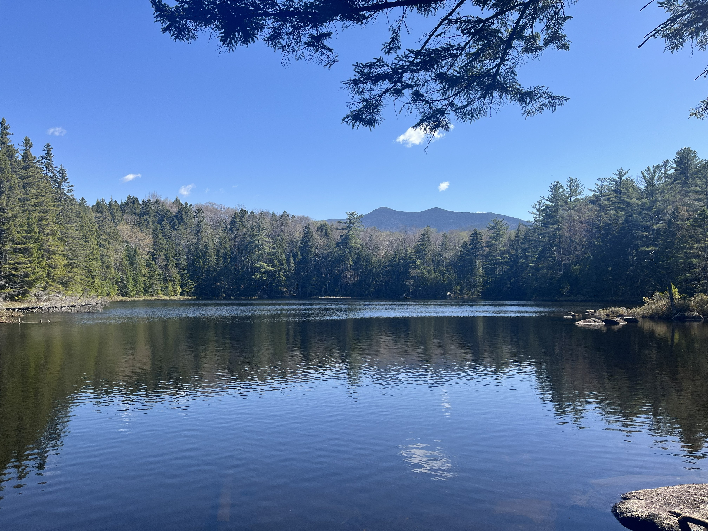
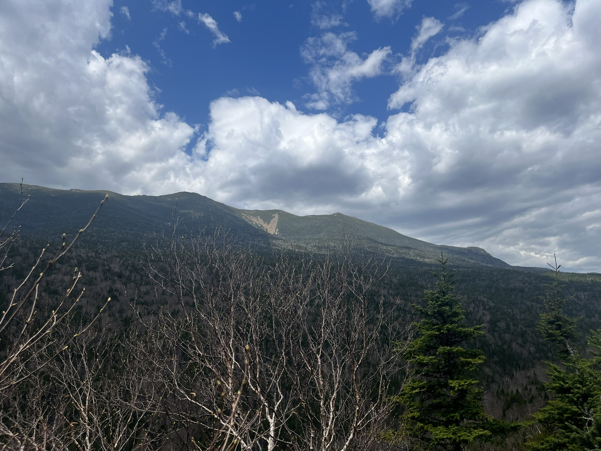
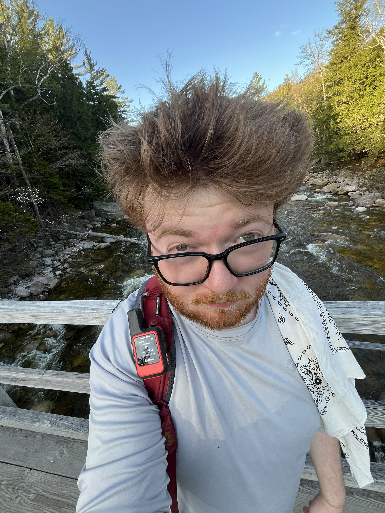
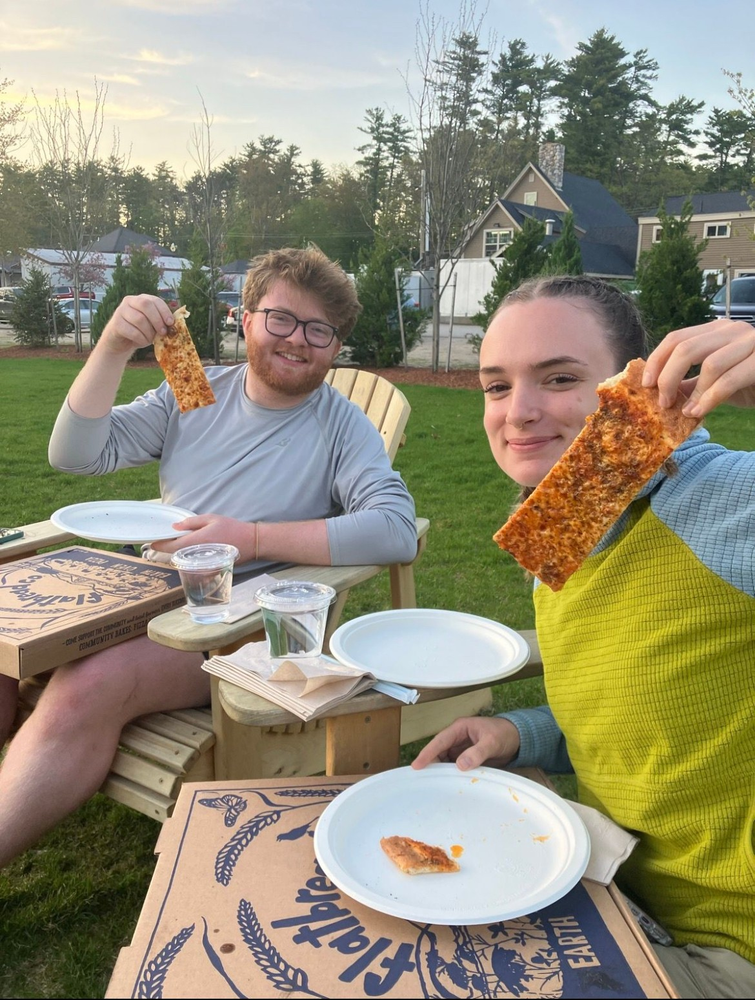
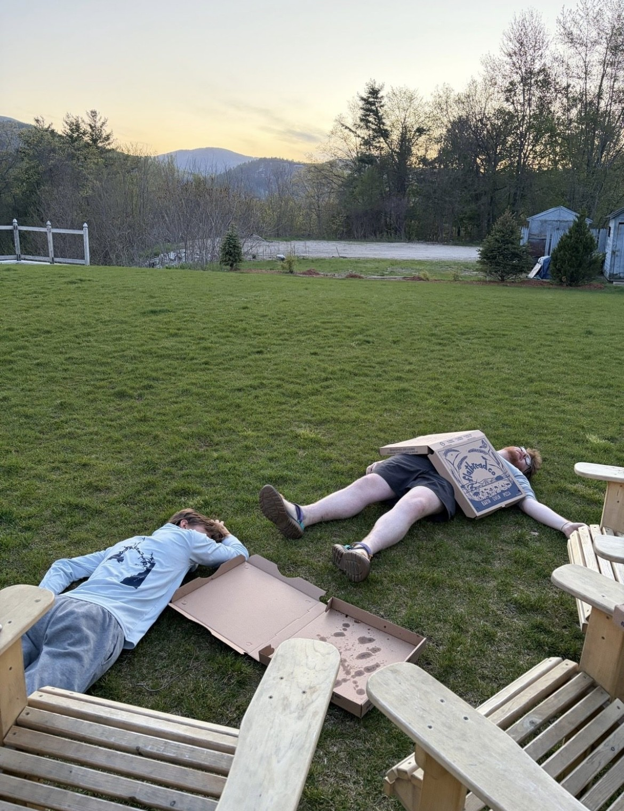

Phil Breton

Hiking
I am working on hiking all 48 4000-foot mountains in New Hampshire.
I have been working on this since 2020.
Currently, I have hiked 42 out of the 48 mountains.
Here is a list of the mountains that I have left and their elevations:
- Carter Dome (4832')
- Middle Carter (4610')
- Garfield (4500')
- South Carter (4430')
- Zealand (4260')
- Moriah (4049')
I plan to add pictures to this section.
Wildcat Mountain, July 12, 2026 (#41 and #42)

My brother and I hiked Wildcat Mountain on July 12.
Because we brought two cars, we were able to hike it point-to-point, going up Wildcat Ridge Trail and down Nineteen Mile Brook Trail.


It was cool to see the Wildcat Mountain ski lift and ski patrol just before the first peak.
Some other hikers took the trail up and the lift down. (smart!)
After we finished the Wildcats and descended the trail to the Carter Hut, we were rewarded with an awesome view of Wildcat D over the pond.
Owl's Head, May 13, 2026 (#40)

I hiked Owl's Head on May 13 with my friends Catie and Ian.
I was not looking forward to this hike.
My phone logged the activity as 16 miles, 3,000 ft of elev. gain, which took 7 hours and 35 minutes of moving time.
It ended up being a great time.


For trails, we took
- Lincoln Woods Trail
- Black Pond Trail
- Black Pond Bushwhack
- Lincoln Brook Trail, and
- Owl's Head Path
The summit is wooded, but the rest of the hike was scenic. It took us over the Pemi River, past Black Pond, along Lincoln Brook, and up a rock slide.


Afterwards, we obliterated three (much-deserved) large Jay's Heart Pizzas in North Conway:

